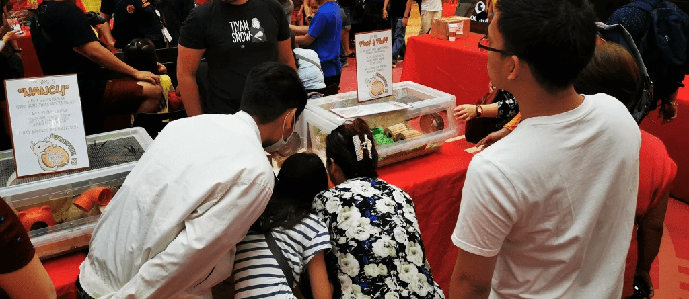
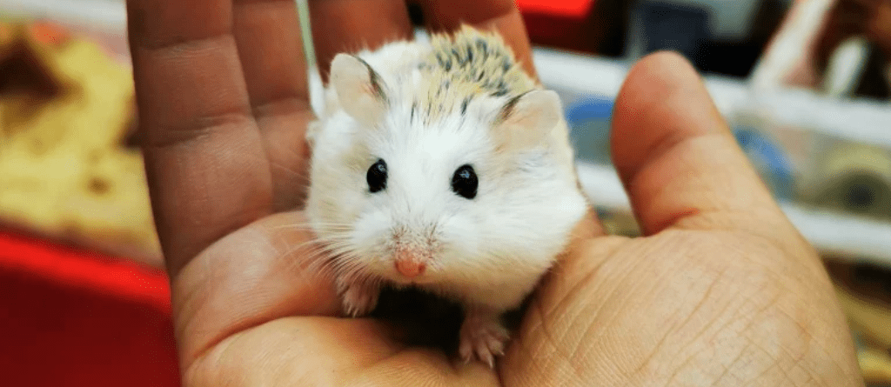

Philippine Hamster Keepers is a community where novice and experienced hamster owners may discuss proper hamster care. We assist those in need by offering information and real-time assistance. PHK meets on a regular basis for planned events such as an anniversary and a Christmas party. We make every effort to create a healthy community. We like to treat ourselves as if we were a family. Our main objective is to educate people about proper hamster care and to always strive to improve the quality of life for our hamsters.
Every keeper must provide a cage with with sufficient space. PHK implements a minimum of 360 sqin (2400 sqcm) for dwarf hamsters, and 420 sqin (2700 sqcm) for Syrian hamsters. Bigger enclosures are always encouraged. If there are levels, make sure that it is not too high (to remove the risk of falling). Enclosures can be Bin cages, Aquariums / Tanks, or a large wired cage. Please check our basic hamster care tab for more information.
We must provide bedding material that is safe for hamsters. Aspen wood, paper beddings, shredded tissue paper, and birch wood shavings are suitable for them. PHK does not promote beddings made from kiln-dried pine, cedar, or pine wood. Fluffy beddings such as cotton, kapok or fibrous material that can strangle or cut off circulation of their veins are also not recommended.
Wheels must also be provided to all hamster species. Wheels must be suitable for the specific hamster species. Wheels must have a solid base (wired bar wheels must be covered with a solid material to keep hamsters from getting bumble foot). Wheels that are too small will also cause your hamster’s back to arch which can result in spinal injuries. We don’t recommend the use of hamster balls, but we encourage using playpens free roaming hamsters in a confined room or area. Saucers are not advisable for Syrians that are 4 months old or older as this may cause their back to curve.
Hamsters must be given the access to food. As hamsters create food stores, it is important to make sure that there is always access to food. Provide a food mix that is balanced to ensure that they get all the nutrition they need. We have a list of food available for them in our Hamster Basic Care.
Fresh fruit and vegetables should be given to your hamster regularly with intervals. Hamsters will eat carrots, kale, malunggay, apple, strawberry and many more fruits and vegetables. Foods such as onions, garlic and raw potato are dangerous for your pet (see hamster basic care section for more food selections). Hamsters enjoy treats. Owners should be careful with pet shop treats as these are high in sugar. Foods made for infants, like Gerber Puffs and nutri-puffs, are more suitable treats.
Hamsters are active creatures. They stay up all night till twilight releasing their energy by searching and and roaming around their cage. It is best to give them access to many toys to break their boredom and to stimulate their interest. Buying toys or making them (DIY) works as well. Make sure to only provide toys that wont put their life at risk.
Chews are also good, as they help a hamster keep its teeth at an appropriate length. Whimzees – a dog chew available in most stores – are great as hamsters seem to be get excited about chewing them. Wood chews are also acceptable, though many hamster will ignore these, you can submerge these wood chews in your food mix so they become interested chewing this. Cardboard or tissue rolls works well too.
It can be helpful to have a wide variety of toys to switch in and out to keep your hamster entertained. Not all hamsters appreciate this, and some may prefer the consistency.
